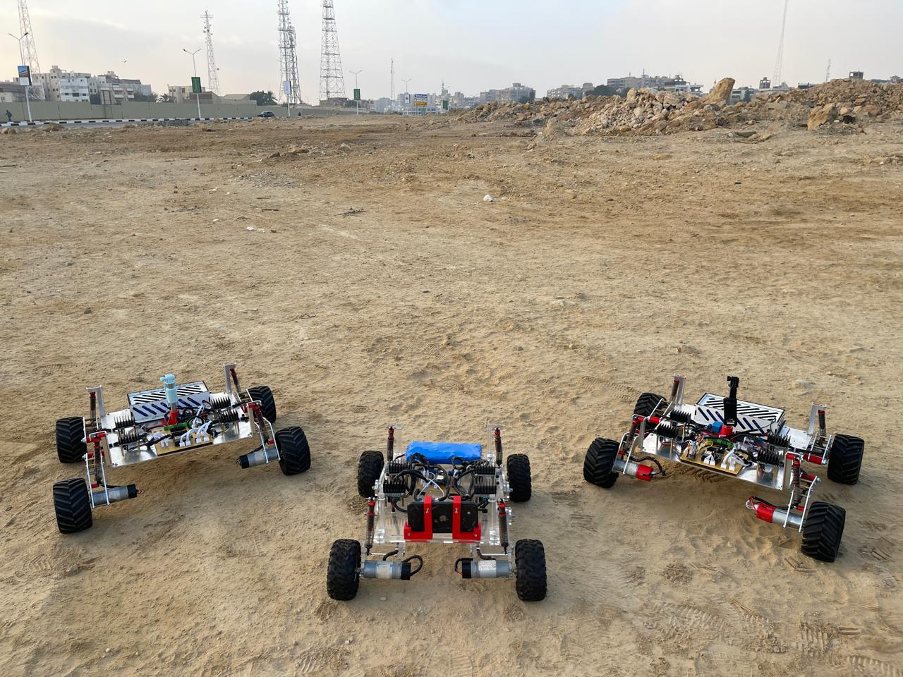

Graduation project · A+

AI-Enhanced Autonomous Surveying Swarm
ROS 2 Humble · multi-robot coverage
A three-rover swarm that autonomously surveys terrain. Built the ROS 2 architecture — multi-robot namespacing, Nav2/TF bring-up, and Voronoi-partitioned, stigmergy-based coverage planning — with Gazebo simulation and CycloneDDS tuned for field Wi-Fi. Pitched the prototype to win a 100K EGP research grant from ASRT.